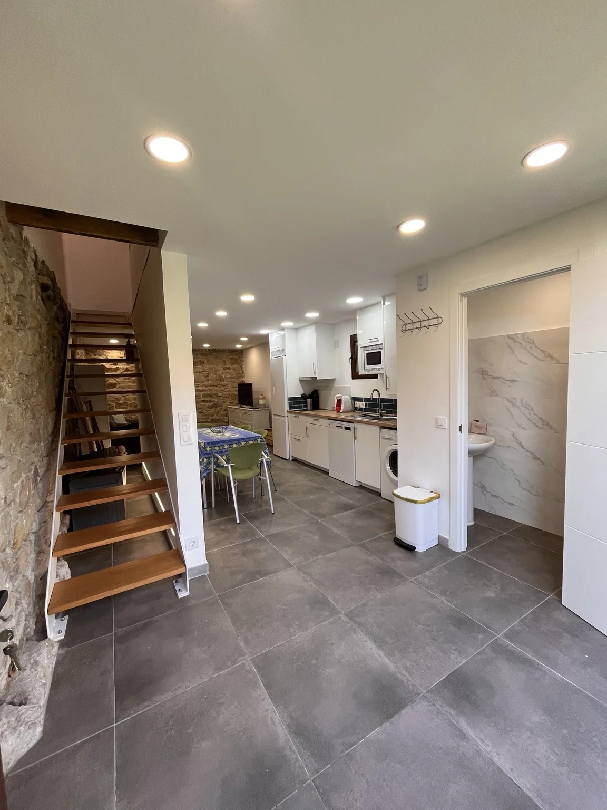

La Casita de Lastres 2
Una casita de piedra reformada en Luces, cerca de Lastres, con dos dormitorios, baños privados y jardín con barbacoa.
Imagina tus días aquí
Elige las fechas de tu estancia. Hernán te confirmará disponibilidad y precio personalmente.
Explorar la vivienda¿Cuándo te gustaría venir?
Consulta disponibilidad y precio para tus fechas. Tu estancia quedará reservada cuando recibas la confirmación.
¿Qué quieres saber?
Toca una tarjeta para abrirla.
Fotos de la casaDesliza para ver la vivienda+
Dónde dormirás+
Dos dormitorios en la planta superior, cada uno con baño privado. Cada habitación permite alojar hasta tres personas en camas individuales de 90 cm; las terceras plazas se preparan según la ocupación. Confirma la distribución con Hernán.
Cocina y salón+
En la planta baja se unen cocina, comedor y salón, con paredes de piedra y televisión. Cocina con frigorífico, microondas, lavavajillas y lavadora. Wifi y aire acondicionado.
Baños y lavandería+
Dos baños completos con ducha, uno privado para cada dormitorio, y un aseo en la planta baja. La lavadora está en la cocina.
Jardín y entorno+
La casa está en Luces, a unos 2 km de Lastres. Cuenta con jardín, barbacoa y mobiliario exterior, además de aparcamiento frente a la casa. Puedes explorar el entorno del faro de Luces y la costa de Lastres.
Antes de llegar+
Entrada desde las 16:00 y salida antes de las 11:00, según el anuncio de Airbnb. Se admiten mascotas: consulta las condiciones con Hernán. La vivienda tiene dos plantas comunicadas por escaleras. Confirma disponibilidad, precio y detalles de tu estancia antes de reservar.
Registro turístico: VV-3524-AS

Pregunta lo que quieras sobre esta vivienda
Soy el asistente de esta vivienda. Te ayudo a conocer sus espacios y a preparar tus días en Luces.
No compartas datos personales. Tus preguntas se envían a Google Gemini para responder. Privacidad.
Si necesitas una respuesta personal o un dato no confirmado, habla con Hernán por WhatsApp ↗